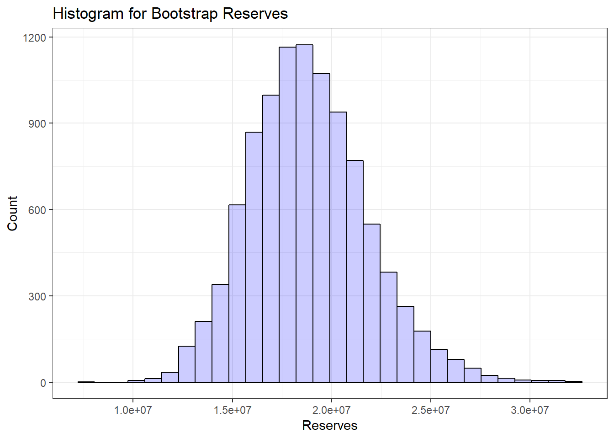
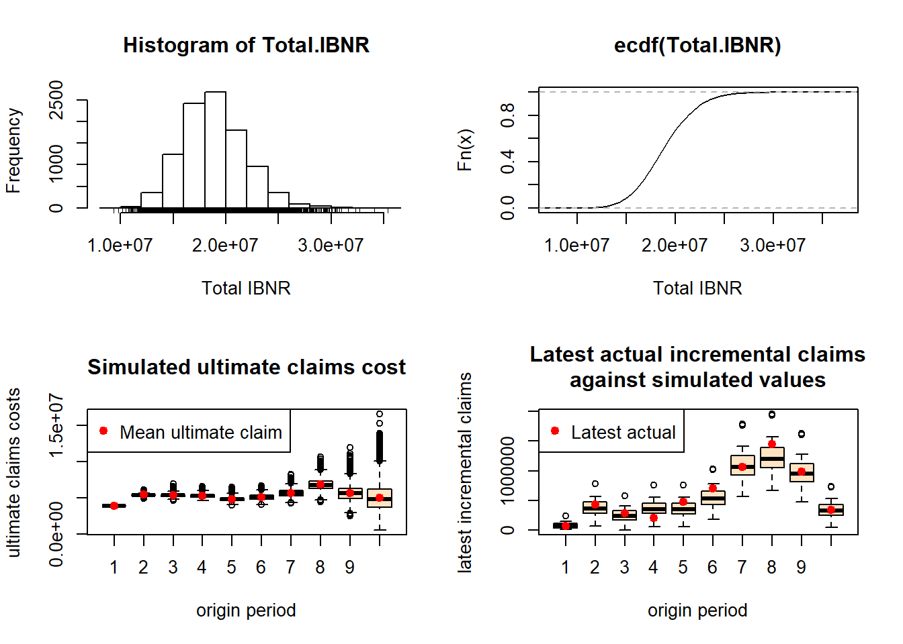

10 Bootstrap analysis
Starting from the results of an overdispersed Poisson GLM you can now code a bootstrap analysis to simulate from the predictive distribution of the outstanding reserve. Here is the preparatory work.
# OD Poisson GLM of Xij versus i+j
poi_glm_od <- glm(Xij ~ i + j, quasipoisson(link=log), data = my_triangle_data)
summary(poi_glm_od)##
## Call:
## glm(formula = Xij ~ i + j, family = quasipoisson(link = log),
## data = my_triangle_data)
##
## Deviance Residuals:
## Min 1Q Median 3Q Max
## -464.88 -123.73 -21.75 116.21 494.35
##
## Coefficients:
## Estimate Std. Error t value Pr(>|t|)
## (Intercept) 12.506405 0.172924 72.323 < 2e-16 ***
## i2 0.331272 0.153537 2.158 0.03771 *
## i3 0.321119 0.157719 2.036 0.04916 *
## i4 0.305960 0.160736 1.903 0.06499 .
## i5 0.219316 0.167970 1.306 0.19994
## i6 0.270077 0.170756 1.582 0.12247
## i7 0.372208 0.174451 2.134 0.03976 *
## i8 0.553333 0.186525 2.967 0.00532 **
## i9 0.368934 0.239181 1.542 0.13170
## i10 0.242033 0.427562 0.566 0.57485
## j2 0.912526 0.148850 6.131 4.65e-07 ***
## j3 0.958831 0.152569 6.285 2.90e-07 ***
## j4 1.025997 0.156883 6.540 1.33e-07 ***
## j5 0.435276 0.183914 2.367 0.02344 *
## j6 0.080057 0.214770 0.373 0.71152
## j7 -0.006381 0.238290 -0.027 0.97878
## j8 -0.394452 0.310289 -1.271 0.21180
## j9 0.009378 0.320249 0.029 0.97680
## j10 -1.379907 0.896690 -1.539 0.13258
## ---
## Signif. codes: 0 '***' 0.001 '**' 0.01 '*' 0.05 '.' 0.1 ' ' 1
##
## (Dispersion parameter for quasipoisson family taken to be 52601.93)
##
## Null deviance: 10699464 on 54 degrees of freedom
## Residual deviance: 1903014 on 36 degrees of freedom
## AIC: NA
##
## Number of Fisher Scoring iterations: 4# extract Pearson residuals
Prs.resid <- (my_triangle_data$Xij - fitted(poi_glm_od))/sqrt(fitted(poi_glm_od))
# get estimate dispersion parameter
n## [1] 55p <- 2*TT-1
p## [1] 19phi.P <- sum(Prs.resid^2)/(n-p)
phi.P## [1] 52601.36# adjust the residuals for bias in the same way as scale parameter
Adj.Prs.resid <- Prs.resid*sqrt(n/(n-p))And here starts the bootstrap loop, see Katrien’s lecture notes for explanation and schematic overview.
# initialize the random number generator
set.seed(6345789)
# i and j as factor variables
i <- rep(1:TT, TT:1); i <- as.factor(i)
j <- sequence(TT:1); j <- as.factor(j)
# run the bootstrap loop many times, eg 10000 times
nBoot <- 10000
payments <- numeric(nBoot)
for(boots in 1:nBoot){ ## start of the bootstrap loop
# Step 1: resample from the adjusted residuals, with replacement
Ps.Xij <- sample(Adj.Prs.resid, n, replace=TRUE)
# Step 2: using this set of residuals and the estimated values of \hat{\mu_{ij}}
# create a new suitable pseudo-history
Ps.Xij <- Ps.Xij*sqrt(fitted(poi_glm_od))+fitted(poi_glm_od)
Ps.Xij <- pmax(Ps.Xij, 0)
# Step 3: from this history, estimate \alpha_i, beta_j
Ps.CL <- glm(Ps.Xij ~ i + j, quasipoisson)
coefs <- exp(as.numeric(coef(Ps.CL)))
Ps.alpha <- c(1, coefs[2:TT])*coefs[1]
Ps.beta <- c(1, coefs[(TT+1):(2*TT-1)])
# Step 4: compute fitted values, use sum of future part as an estimate of the reserve
Ps.fits <- Ps.alpha%*%t(Ps.beta)
Ps.reserve <- sum(Ps.fits[future])
# Step 5:
Ps.totpayments <- phi.P*rpois(1, Ps.reserve/phi.P)
# Step 6:
payments[boots] <- Ps.totpayments
}
min(payments)## [1] 7416792max(payments)## [1] 31981628You extract useful summaries from the results stored in payments as follows.
quantile(payments, c(0.5, 0.75, 0.9, 0.95, 0.99), na.rm = TRUE)## 50% 75% 90% 95% 99%
## 18673483 20672335 22671187 23986221 26826694mean(payments)## [1] 18848278sd(payments)## [1] 2968997And plots
d <- data.frame(payments)
library(ggplot2)
ggplot(data=d, aes(payments)) +
geom_histogram(col = "black", fill = "blue", alpha = 0.2) + theme_bw() +
labs(title = "Histogram for Bootstrap Reserves", x="Reserves", y="Count") ## `stat_bin()` using `bins = 30`. Pick better value with `binwidth`.
The ChainLadder package also has useful functions to set up bootstrap simulations.
set.seed(1)
B <- BootChainLadder(GenIns, R = 10000, process.distr = "od.pois")
B## BootChainLadder(Triangle = GenIns, R = 10000, process.distr = "od.pois")
##
## Latest Mean Ultimate Mean IBNR IBNR.S.E IBNR 75% IBNR 95%
## 1 3,901,463 3,901,463 0 0 0 0
## 2 5,339,085 5,435,471 96,386 113,603 149,138 312,621
## 3 4,909,315 5,380,702 471,387 217,453 598,149 864,988
## 4 4,588,268 5,305,145 716,877 261,068 876,808 1,179,647
## 5 3,873,311 4,864,352 991,041 307,441 1,179,230 1,542,424
## 6 3,691,712 5,126,756 1,435,044 380,790 1,673,438 2,107,963
## 7 3,483,130 5,673,303 2,190,173 497,466 2,509,815 3,058,627
## 8 2,864,498 6,815,226 3,950,728 796,044 4,445,624 5,355,080
## 9 1,363,294 5,684,146 4,320,852 1,064,740 4,952,187 6,209,475
## 10 344,014 5,043,687 4,699,673 2,018,504 5,899,153 8,156,800
##
## Totals
## Latest: 34,358,090
## Mean Ultimate: 53,230,252
## Mean IBNR: 18,872,162
## IBNR.S.E 3,001,662
## Total IBNR 75%: 20,761,090
## Total IBNR 95%: 24,064,106plot(B)
# some attributes o
B$Triangle## dev
## origin 1 2 3 4 5 6 7 8
## 1 357848 1124788 1735330 2218270 2745596 3319994 3466336 3606286
## 2 352118 1236139 2170033 3353322 3799067 4120063 4647867 4914039
## 3 290507 1292306 2218525 3235179 3985995 4132918 4628910 4909315
## 4 310608 1418858 2195047 3757447 4029929 4381982 4588268 NA
## 5 443160 1136350 2128333 2897821 3402672 3873311 NA NA
## 6 396132 1333217 2180715 2985752 3691712 NA NA NA
## 7 440832 1288463 2419861 3483130 NA NA NA NA
## 8 359480 1421128 2864498 NA NA NA NA NA
## 9 376686 1363294 NA NA NA NA NA NA
## 10 344014 NA NA NA NA NA NA NA
## dev
## origin 9 10
## 1 3833515 3901463
## 2 5339085 NA
## 3 NA NA
## 4 NA NA
## 5 NA NA
## 6 NA NA
## 7 NA NA
## 8 NA NA
## 9 NA NA
## 10 NA NAB$f## [1] 3.490607 1.747333 1.457413 1.173852 1.103824 1.086269 1.053874
## [8] 1.076555 1.017725 1.000000B$IBNR.Totals[1:10]## [1] 21398909 17870368 17597508 18428981 19512320 19606687 15880725
## [8] 22244763 19325943 17354310